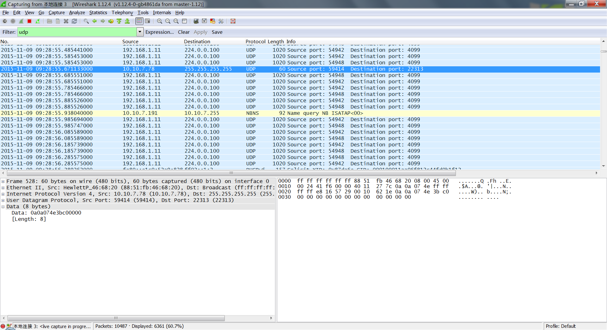
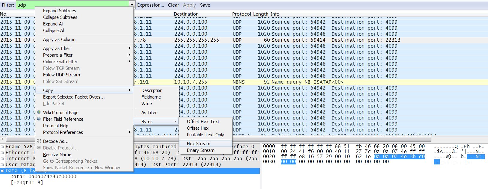
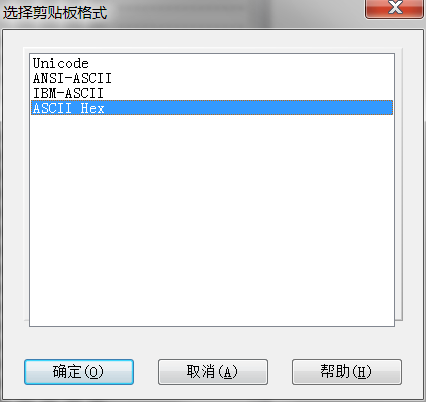
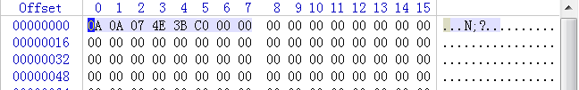

Wireshark使用方法
Wed, Oct 28, 2015一站式学习Wireshark
原始链接 EMC中文支持论坛打开速度有点慢，是 HTTPS的，但是比较全。下面是伯乐博客的转载，打开速度比较快：
Wireshark中的数据快速转变为C数组进行分析
在Wireshark中抓取到数据包的时候,如果是私有数据协议的,那么就需要到数据进行分析, 为了配合分析,一般会定义相应数据的C结构体,这时候,为了验证是否正确,需要把数据包 的数据导入到代码中进行解码, 每次频繁操作确实麻烦,这里发现一个小的技巧,可以快速 的拿到数据.
如我们要拿到下图中选中的UDP数据包中包含的8个字节的数据:

在Data哪一项中右击,按下图弹出的菜单选项复制数据:

然后打开WinHex,新建一个空白文件,在Offset 0处,点击右键,弹出菜单选择”编辑”,再在 弹出的菜单中选择”剪切板数据…“,再选择”粘贴”,再弹出的对话框中选择”确定”即可, 这时弹出下面的对话框,选择”ASCII Hex”:

之后数据为下图:

选中这8个字节数据后,点击右键,选择”编辑”->“复制选块”->“C 源码”,然后到代码编辑器 中,点击”粘贴”,这样数据就复制过来了,可以转换为结构体指针,进行快速解码了.如果结 构体成员非常多,这样很便利.
unsigned char data[8] = {
0x0A, 0x0A, 0x07, 0x4E, 0x3B, 0xC0, 0x00, 0x00
};
但是我觉得像Wireshark这样的工具应该有插件机制或者其他的方法技巧,可以直接做到, 只是我不知道而已.